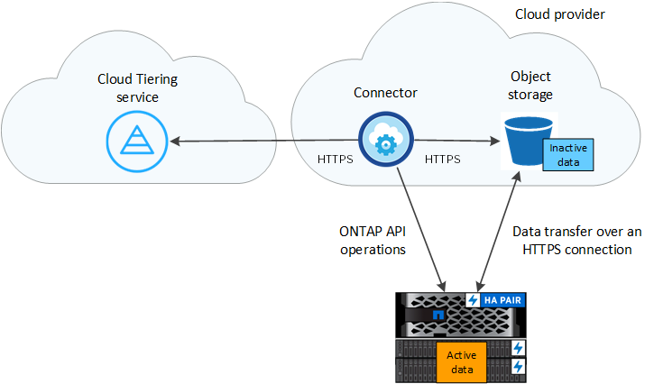

Request doc changes
Request doc changes Edit this page
Edit this page Learn how to contribute
Learn how to contributeLearn about Cloud Tiering
Contributors
NetApp’s Cloud Tiering service extends your data center to the cloud by automatically tiering inactive data from on-premises ONTAP clusters to object storage. This frees valuable space on the cluster for more workloads, without making changes to the application layer. Cloud Tiering can reduce costs in your data center and enables you to switch from a CAPEX model to an OPEX model.
The Cloud Tiering service leverages the capabilities of FabricPool. FabricPool is a NetApp Data Fabric technology that enables automated tiering of data to low-cost object storage. Active (hot) data remains on the local tier (on-premises ONTAP aggregates), while inactive (cold) data is moved to the cloud tier — all while preserving ONTAP data efficiencies.
Note: Starting with ONTAP 9.8 you can tier data from aggregates consisting of HDDs in addition to high-performance SSDs. Prior to that release you can tier data only from AFF systems or FAS systems with all-SSD aggregates. See Requirements for using FabricPool for details.
Features
Cloud Tiering offers automation, monitoring, reports, and a common management interface:
-
Automation makes it easier to set up and manage data tiering from on-prem ONTAP clusters to the cloud
-
You can choose the default cloud provider storage class/access tier, or use lifecycle management to move older tiered data to a more cost-effective tier
-
A single pane of glass removes the need to independently manage FabricPool across several clusters
-
Reports show the amount of active and inactive data on each cluster
-
A tiering health status helps you identify and correct issues as they occur
-
If you have Cloud Volumes ONTAP systems, you’ll find them in the Cluster Dashboard so you get a full view of data tiering in your hybrid cloud infrastructure
For more details about the value that Cloud Tiering provides, check out the Cloud Tiering page on NetApp Cloud Central.

|
Cloud Volumes ONTAP systems are read-only from Cloud Tiering. You set up tiering for Cloud Volumes ONTAP from the working environment in Cloud Manager. |
Supported object storage providers
You can tier inactive data from an on-premises ONTAP cluster to the following object storage providers:
-
Amazon S3
-
Microsoft Azure Blob
-
Google Cloud Storage
-
S3-compatible object storage
-
NetApp StorageGRID

|
You can tier data from NAS volumes to the public cloud or to private clouds, like StorageGRID. When tiering data that is accessed by SAN protocols, NetApp recommends using private clouds due to connectivity considerations. |
Object storage tiers
Each ONTAP cluster tiers inactive data to a single object store. When you set up data tiering, you have the choice to add a new bucket/container or to select an existing bucket/container, along with a storage class or access tier.
Cloud Tiering uses the cloud provider default storage class/access tier for your inactive data. However, you can apply a lifecycle rule so that the data automatically transitions from the default storage class to another storage class after a certain number of days. This can help keep your costs down by moving very cold data to less expensive storage.
|
|
You can’t select lifecycle rules for data tiered to StorageGRID or S3-compatible storage. |
Pricing and licenses
Pay for Cloud Tiering through a pay-as-you-go subscription, a bring-your-own Cloud Tiering license, or a combination of both. A 30-day free trial is available for your first cluster if you don’t have a license.
There are no charges when tiering data to StorageGRID. Neither a BYOL license or PAYGO registration is required.
30-day free trial
If you don’t have a Cloud Tiering license, a 30-day free trial of Cloud Tiering starts when you set up tiering to your first cluster. After that 30-day free trial ends, you’ll need to pay for Cloud Tiering through a pay-as-you-go subscription, a BYOL license, or a combination of both.
If your free trial ends and you haven’t subscribed or added a license, then ONTAP no longer tiers cold data to object storage, but existing data is still available for access.
Pay-as-you-go subscription
Cloud Tiering offers consumption-based licensing in a pay-as-you-go model. After subscribing through your cloud provider’s marketplace, you pay per GB for data that’s tiered—there’s no up-front payment. You are billed by your cloud provider through your monthly bill.
You should subscribe even if you have a free trial or if you bring your own license (BYOL):
-
Subscribing ensures that there’s no disruption of service after your free trial ends.
When the trial ends, you’ll be charged hourly according to the amount of data that you tier.
-
If you tier more data than allowed by your BYOL license, then data tiering continues through your pay-as-you-go subscription.
For example, if you have a 10 TB license, all capacity beyond the 10 TB is charged through the pay-as-you-go subscription.
You won’t be charged from your pay-as-you-go subscription during your free trial or if you haven’t exceeded your Cloud Tiering BYOL license.
Bring your own license
Bring your own license by purchasing a Cloud Tiering license from NetApp. You can purchase 2-, 12-, 24-, or 36-month term licenses and specify any amount of tiering capacity. The BYOL Cloud Tiering license is a floating license that you can use across multiple on-premises ONTAP clusters. The total tiering capacity that you define in your Cloud Tiering license can be used by all of your on-prem clusters.
After you purchase a Cloud Tiering license, you’ll need use the Digital Wallet page in Cloud Manager to add the license. See how to use a Cloud Tiering BYOL license.
As noted above, we recommend that you set up a pay-as-you-go subscription, even if you have purchased a BYOL license.
|
|
Starting August 2021 the old FabricPool license was replaced by the Cloud Tiering license. Read more about how the Cloud Tiering license is different than the FabricPool license. |
How Cloud Tiering works
Cloud Tiering is a NetApp-managed service that uses FabricPool technology to automatically tier inactive (cold) data from your on-premises ONTAP clusters to object storage in your public cloud or private cloud. Connections to ONTAP take place from a Connector.
The following image shows the relationship between each component:

At a high level, Cloud Tiering works like this:
-
You discover your on-prem cluster from Cloud Manager.
-
You set up tiering by providing details about your object storage, including the bucket/container, a storage class or access tier, and lifecycle rules for the tiered data.
-
Cloud Manager configures ONTAP to use the object storage provider and discovers the amount of active and inactive data on the cluster.
-
You choose the volumes to tier and the tiering policy to apply to those volumes.
-
ONTAP starts tiering inactive data to the object store as soon as the data has reached the thresholds to be considered inactive (see Volume tiering policies).
-
If you have applied a lifecycle rule to the tiered data (only available for some providers), older tiered data is moved to a more cost-effective tier after a certain number of days.
Volume tiering policies
When you select the volumes that you want to tier, you choose a volume tiering policy to apply to each volume. A tiering policy determines when or whether the user data blocks of a volume are moved to the cloud.
You can also adjust the cooling period. This is the number of days that user data in a volume must remain inactive before it is considered "cold" and moved to object storage. For tiering policies that allow you to adjust the cooling period, the valid values are 2 to 183 days when using ONTAP 9.8 and later, and 2 to 63 days for earlier ONTAP versions; 2 to 63 is the recommended best practice.
- No Policy (None)
-
Keeps the data on a volume in the performance tier, preventing it from being moved to the cloud tier.
- Cold snapshots (Snapshot only)
-
ONTAP tiers cold Snapshot blocks in the volume that are not shared with the active file system to object storage. If read, cold data blocks on the cloud tier become hot and are moved to the performance tier.
Data is tiered only after an aggregate has reached 50% capacity and when the data has reached the cooling period. The default number of cooling days is 2, but you can adjust this number.
Re-heated data is written back to the performance tier only if there is space. If the performance tier capacity is more than 70% full, blocks continue to be accessed from the cloud tier. - Cold user data & snapshots (Auto)
-
ONTAP tiers all cold blocks in the volume (not including metadata) to object storage. The cold data includes not just Snapshot copies, but also cold user data from the active file system.
If read by random reads, cold data blocks on the cloud tier become hot and are moved to the performance tier. If read by sequential reads, such as those associated with index and antivirus scans, cold data blocks on the cloud tier stay cold and are not written to the performance tier. This policy is available starting with ONTAP 9.4.
Data is tiered only after an aggregate has reached 50% capacity and when the data has reached the cooling period. The default number of cooling days is 31, but you can adjust this number.
Re-heated data is written back to the performance tier only if there is space. If the performance tier capacity is more than 70% full, blocks continue to be accessed from the cloud tier. - All user data (All)
-
All data (not including metadata) is immediately marked as cold and tiered to object storage as soon as possible. There is no need to wait 48 hours for new blocks in a volume to become cold. Note that blocks located in the volume prior to the All policy being set require 48 hours to become cold.
If read, cold data blocks on the cloud tier stay cold and are not written back to the performance tier. This policy is available starting with ONTAP 9.6.
Take the following into consideration before you choose this tiering policy:
-
Tiering data immediately reduces storage efficiencies (inline only).
-
You should use this policy only if you are confident that cold data on the volume will not change.
-
Object storage is not transactional and will result in significant fragmentation if subjected to change.
-
Consider the impact of SnapMirror transfers before assigning the All tiering policy to source volumes in data protection relationships.
Because data is tiered immediately, SnapMirror will read data from the cloud tier rather than the performance tier. This will result in slower SnapMirror operations—possibly slowing other SnapMirror operations later in queue—even if they are using different tiering policies.
-
Cloud Backup is similarly affected by volumes set with a tiering policy. See tiering policy considerations with Cloud Backup.
-
- All DP user data (Backup)
-
All data on a data protection volume (not including metadata) is immediately moved to the cloud tier. If read, cold data blocks on the cloud tier stay cold and are not written back to the performance tier (starting with ONTAP 9.4).
This policy is available for ONTAP 9.5 or earlier. It was replaced with the All tiering policy starting with ONTAP 9.6.